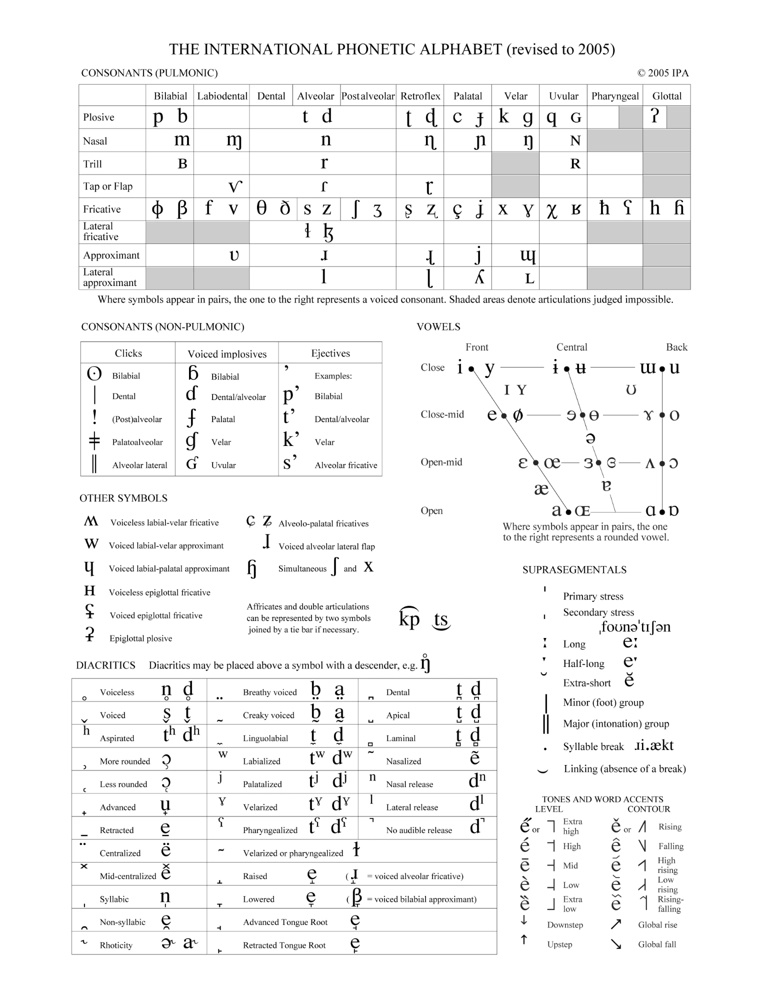

Voices of the Past: Exploring the Evolutionary Origins of Music and Language

Written for Music 108: Perception and Cognition in Music (Prof. Jeremy Wagner), December 11, 2023
“The human brain is the most complex organ known to biology and the second most complex entity in the universe—the first being the universe itself” – Steven Mithen
Introduction
This paper sets out to examine the evolutionary foundations of music and language through an exploration of existing theoretical framework. I will cite linguists, neuroscientists, archeologists, composers and more, all of whom have their own take on how and why these systems of communication evolved.
What I have noticed is missing so far in the literature review is a complete, comprehensive look into the different features of music and language. Any topic dealing with the brain and how it works requires a philosophical aspect to it. So far, what I have found on the topic seems to be limited to its quantitative outlook.
The most integrated theory was given by Steven Mithen in his book “The Singing Neanderthals” by what he refers to as his “Hmmmm” hypothesis as the single precursor to music and language. It is this proposal that I wish to explore and ultimately substantiate in this paper; I evaluate the proposals of others and set out my own ideas about what is missing from the given perspective on how music and language evolved.
Historical Context: Convergent Evolution?
Historically speaking, in the realm of musicology and linguistics, music and language had been treated as separate psychological entities: language was seen as a faculty of the ‘logical’ left brain, and music of the ‘creative’ right1. This dualistic view, however, has since been abandoned with contrary evidence from modern brain imaging techniques which have uncovered the interwoven nature of the two systems.
Not only do both systems have similar neural correlates, but both have a hierarchical structure and recursionary properties2. Words, or tones, are combined into phrases—utterances or melodies—which can be further combined to create meaningful language and emotive musical events.
These two systems are too similar to have been a product of convergent evolution. They must be related in some way or another. Naturally then, there seem to be two obvious alternative hypotheses: music as something which evolved from language, or, conversely, language as a system evolving from music.
Similar, Yes, But Still Distinct
This view, however, takes one system as an affective force and the other as a structive one; thus leading us to the chicken-and-egg problem: which one came first?
Evidence from empirical case studies done with various individuals showing music and language as two separate systems suggests that we may need to refute this hypothesis all together. The first we will look at is a case where there was music without language, the second a case where there was language without music.
Vissarion Yakovlevich Shebalin was a Russian composer and a highly respected professor of the Moscow Conservatoire, writing symphonies and pieces for the pianoforte and the opera. At the age of 51, Shebalin had a stroke in his left temporal lobe, but, thankfully, it was minor and he recovered quickly. Six years later he suffered a second, more severe stroke, again in his left temporal lobe. This time he became partially paralyzed in his right side and his speech abilities vanished. It took months for his physical abilities to come back, but his ability to speak and understand language never really recovered. He lived like this for the next four years before his death, confused and frustrated that he couldn’t understand what was being said and not being able to get out what he wanted to say. Nevertheless, throughout those four years, he completed his fifth, and final, symphony.
Somehow the part of his brain responsible for rhythm, melody and other musical feats had been untouched, while those responsible for speech comprehension and production had been destroyed.
GL, also a 51 year old musician, suffered an aneurysm in his right middle cerebral artery. Like Shebalin, he recovered the first time, but the next year he had a second aneurysm on the left side, leaving him with aphasia. In GL’s case, however, his cognitive and motor abilities—memory, language, visual discrimination—were all normal after recovery. The odd part was that he lost his musical abilities. He could no longer identify tune, melody, or rhythm.
We see from these cases that music can exist in the brain without language, as can language exist without music. This is referred to as ‘double dissociation’ in the brain: implying “both developmental and evolutionary independence”3. So, although similar, they are distinct enough to refute the hypothesis that one must have come from the other. Now, we will turn to a new outlook shared by many theorists that there was some sort of shared precursor to language and music.
Proto-language
Proto-language is said to be the single precursor to music and language. Somewhere in our evolutionary history, we had been communicating entirely in this said proto-language, before it morphed into two distinct systems: one of music, one of language.
There are two main schools of thought regarding the existence of this ‘proto-language’, depending on whether you take a top-down or bottom-up point of view. The bottom-up approach gives us a compositional outlook: this precursor was some collection of single words—no grammar, no syntax, no method of combination (think of the media representation of cave men: one grunt means “fire”, two grunts means “meat”, three grunts means “bear!”). A holistic view, however, can be thought of as a more synergistic approach. In this sense, a grunt or bark or wherever the auditory message was, was not necessarily made up of words, but the noise itself was the message.
This theory is taken up by linguist Alison Wray. She suggests that utterances take meaning from the whole, because “the parts are, in fact, not words at all, just components of the utterance”4. To explain the evolutionary origins of this proto-language, she looks to an example of holistic utterances seen in vervet monkeys. Vervet monkeys are one of our primate ancestors, splitting from the hominin lineage around 30 million years ago. These monkeys have specific calls for specific predators, and some argue that these calls are comparable to our words.
Vervet monkeys have proved over and over again that they have some sort of sophisticated communication system that is consistent and effective, primarily in warning the members of their groups of dangers in the area. For example, when a leopard, their biggest land dwelling predator, is spotted, the vervets bark loudly and scramble into the tree tops; at the sight of an eagle, their aviator predator, a short, double-syllable cough is expelled, the vervets look up and then run for cover; if the predator is a snake, the monkeys ‘chutter’ and stand on their hind legs to look for the creature5. These behaviors happen every time without fail.
Researchers interested in the compositional point of view of communication began asking questions about whether the alarm calls were functioning as words the same way ‘snake’ or ‘eagle’ does for us: a ‘referential relation’. Wray, and her take on a holistic proto-language, however, argues that the vervet alarm calls should not be thought of as referential relations, and instead as “complete utterances with a function”6. Instead of considering the ‘chutter’ to mean “snake!”, we may think of it to mean“beware of the snake: get up and look for it!”. The calls are not referential but instead ‘manipulative’: the vervets are not trying to only let their companions know that something is there, but they are trying to manipulate their behavior—in other words, get them to watch out or run for cover7.
So far we have the precursor to music and language, with evolutionary origins dating back to over 30 million years ago, as being some holistic, manipulative proto-language. However, not everyone agrees with this perspective.
Musilanguage
Let us turn now to another theorist, Steven Brown. Brown’s view differs from Wray in that he believes the precursor for language and music is in fact referential—at least in part. Brown calls this communicative precursor a “dual-natured referential emotive” system where “music emphasizes sound as emotive meaning and language emphasizes sound as referential meaning”8.
This point of view makes an important consideration to not only the quantitative components of music and language we can measure—the referential meaning—, but also the emotional phenomena we experience through music and language. The notes themselves might not mean anything, nor do the words when taken as discrete units; however, when strung together, in just the right way, an artist can create a piece—whether that’s a symphony or a work of literature—that can evoke a wide range of emotion.
Brown’s take on this theoretical precursor exposes a common critique on a lot of the speculation in the field. Most of the research we have in our social sciences comes from the West. We forget that we have a limited view of thinking here, one that is primarily analytical. Looking back to Wray’s argument that the communicative system was holistic, something we think about as differing from our current language, we must remind ourselves that this shouldn’t come as a surprise at all: many of the world’s current languages are, in fact, holistic in nature.
English is an alphabetic language, a phonetic language where each letter represents an individual sound. Logographic languages, on the other hand, have characters which themselves represent meanings. In alphabetic languages, there is no meaning attached to the individual letters, ‘d’, ‘r’; even groups of letters may not mean anything, ‘ch’, ‘th’. The most basic unit of meaning is a morpheme. In logographic languages, the meaning is intrinsic to the symbols themselves. Therefore, the idea that a communicative system could be holistic in nature should not come as a surprise or a controversy.
Additionally, the way that Brown separates out the referential from the emotive meaning is important. Again, in our western thought we do a lot of ignoring certain phenomena we cannot explain. We write our rules by the mathematics we can measure, and dismiss the rest as ‘miracles’. Both Wray and Mithen’s hypothesis—which we will get into soon—fall to this error of disregarding the metaphysical qualia of the language and music: its ability to make us feel.
Vocal Grooming?
In 1993 another theory which incorporated the phenomenological nature of music and language was proposed by anthropologist Robin Dunbar in his “Vocal Grooming Hypothesis”9. The root of his proposal lies in primates’ tendency to show affection through grooming. The longer apes spent grooming a partner, the stronger the relationship10. Neurologically this can be explained by the fact that grooming releases neurotransmitters in the brain associated with contentment and pleasure. Dunbar’s thought was that as social groups became larger, an individual would have to invest more and more time grooming to maintain a network of relationships. Eventually, groups of early hominids became so big that grooming was no longer a feasible option for maintaining social commitments to all the group’s members.
Dunbar suggests that language evolved as an alternative to solve this hominin dilemma; language could be a mode of “vocal grooming: ‘an expression of mutual interest and commitment that could be simultaneously shared with more than one individual’”11.
This vocal grooming is actually seen in some of our other primate relatives such as the gelada monkeys (species of the new world monkeys which we split from around 30 million years ago). Although extensive research has been conducted with these gelada monkeys, no real ‘meaning’ (e.g. neither referential nor manipulative) has been found: “their vocalizations are limited to acknowledging and maintaining social bonds between individuals and the group as a whole”12.
This evidence makes for a good argument in favor of ‘vocal grooming’ as the precursor of language and music. However, we will still consider one last theory: Steven Mithen’s “Hmmmm” hypothesis.
Hmmmm
Mithen suggests that in order to search for the evolutionary origins of music and language we must begin around 6 million years ago at the time where our primate lineage splits into two branches: one that would further diverge into chimpanzee and bonobo, and one that would eventually become Homo. This is around the time, he proposes, that his system came into use within the early australopithecine species.
Mithen’s Hmmmm hypothesis states that the precursor communication system was “Holistic, multi-modal, manipulative, and musical”13. It draws, either directly or indirectly, from the theories we have so far discussed, specifically, its holistic and manipulative aspects have been borrowed from Wray. It is multi-modal in the sense that whatever this communicative language was, it was used alongside gestures14. Lastly, it is musical “in the sense that it makes substantial use of rhythm and melody” as are the vocalizations of gelada monkeys discussed before15.
Philosophical Limitations of Mithen’s Hmmmm Hypothesis
Steven Mithen set out to create a more “user friendly” theory, unlike those of Wray’s ‘Holistic Proto-language’ or ‘Brown’s musilanguage’. Having the word (either music or language) within the name of the mysterious precursor could cause confusion, he said. However, within the acronym, Mithen uses the description “musical” to describe his theory. He succumbs to the very fault he had set out to avoid. Again, Mithen simply defines ‘musical’ as something that simply has rhythm and melody, however he is missing a much larger idea at play.
This larger idea is a shared fact of both music and language: Not only are these systems that can be measured quantitatively by whether they have recursive abilities or a holistic or compositional aspect to them, they offer us the ability to feel. That is why we need to consider what it actually means for this said precursor to be ‘musical’. To avoid using the word in a definition of itself, we need to create an entirely new repertoire to describe what it really is we are all saying. In the same way that the creation of the field of quantum physics was required to explain the uncertainty of the universe, we need a term to explain the undeniable feelings—of excitement, of sadness, of fear, of joy—that music elicits in us. It may go by a myriad of different names—energy, butterflies, chills, frisson—, but no one is denying its existence. This is what Steven Mithen is forgetting to include in his perspective. To consider only experiential evidence and ignore the phenomenological aspect of qualia ignores an entire paradigm regarding the precursor to language: we cannot describe this in terms limited to adjectives; we must write an entirely new field of thought.
Notes
- Jäncke, Lutz. “The relationship between music and language.” Frontiers in Psychology, 3 (2012): 4. ↩
- Mithen, Steven J. The singing Neanderthals: The origins of music, language, mind, and body. (Harvard University Press: 2006), 16. ↩
- Mithen, Singing Neaderthals, 46. ↩
- Wray, Alison. “Protolanguage as a holistic system for social interaction.” Language & communication 18, no. 1 (1998): 48. ↩
- Mithen, Singing Neaderthals, 108. ↩
- Wray, Alison. “Protolanguage as a holistic system.” 50. ↩
- Mithen, Singing Neaderthals, 109. ↩
- Brown, Steven. The Origins of Music (The MIT Press: 1999), 272. ↩
- Dunbar, Robin Ian MacDonald. Grooming, gossip, and the evolution of language. (Harvard University Press: 1996), 18. ↩
- Dunbar, Robin Ian MacDonald. Grooming, gossip, and the evolution of language, 46. ↩
- Mithen, Singing Neaderthals, 135. ↩
- Mithen, Singing Neaderthals, 110. ↩
- Mithen, Singing Neaderthals, 138. ↩
- To briefly describe the multi-modal aspect of his hypothesis, it is rooted in empirical evidence from gorilla communication. Gorillas use holistic, manipulative gestures to communicate their wants. They are holistic because the gestures are “complete acts themselves”, they cannot be broken up into smaller, still meaningful units (Mithen 119). They are manipulative rather than referential because they intend to manipulate the behavior of another—rather than inform the other about a fact of the world. ↩
- Mithen, Singing Neaderthals, 121. ↩
Bibliography
Brown, Steven. The Origins of Music (The MIT Press: 1999).
Dunbar, Robin Ian MacDonald. Grooming, gossip, and the evolution of language. (Harvard University Press: 1996).
Jäncke, Lutz. “The relationship between music and language.” Frontiers in Psychology, 3 (2012).
Mithen, Steven J. The singing Neanderthals: The origins of music, language, mind, and body. (Harvard University Press: 2006).
Wray, Alison. “Protolanguage as a holistic system for social interaction.” Language & communication 18, no. 1 (1998).